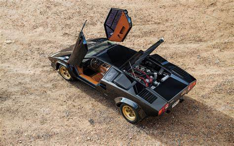
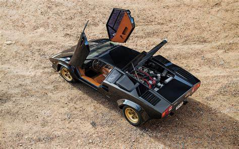
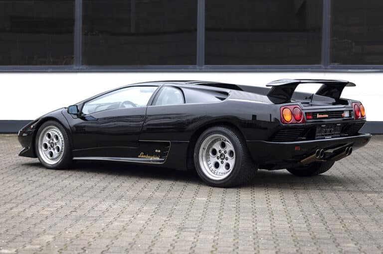
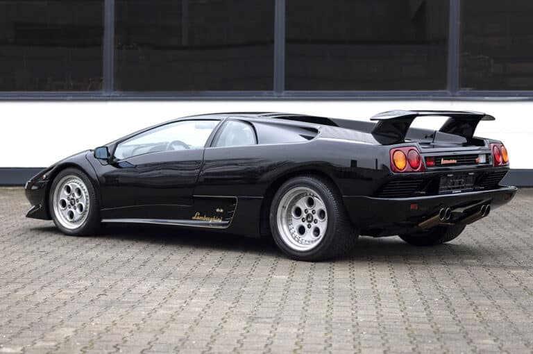

La Ferrari 250 GTO est souvent considérée comme l'une des voitures de sport les plus légendaires jamais construites. Introduite en 1962, cette voiture de course homologuée pour la route incarne
l'essence même de l'ingénierie italienne et du design automobile de l'époque. Dotée d'un moteur V12 de 3,0 litres produisant près de 300 chevaux, la 250 GTO était à la fois rapide sur piste et luxueuse
sur route. Seulement 39 exemplaires ont été produits, ce qui en fait l'une des voitures de collection les plus recherchées au monde.


La Ferrari 365 GTB/4, surnommée "Daytona" en hommage à la triple victoire de la marque au Mans en 1967, est un chef-d'œuvre de puissance et d'élégance. Propulsée par un moteur V12 de 4,4 litres développant
environ 352 chevaux, la Daytona était l'une des voitures de grand tourisme les plus rapides de son époque, atteignant une vitesse de pointe impressionnante de plus de 280 km/h. Son design intemporel, avec ses
lignes fluides et son profil agressif, en fait l'une des Ferrari les plus emblématiques jamais produites.


La Ferrari 288 GTO est la première voiture à porter le badge "GTO" depuis la légendaire 250 GTO des années 1960. Conçue à l'origine pour être un modèle de course du Groupe B, la 288 GTO était propulsée par
un moteur V8 biturbo de 2,9 litres produisant environ 400 chevaux, ce qui lui permettait d'atteindre des vitesses de pointe de plus de 300 km/h. Bien que le Groupe B ait été annulé avant que la voiture ne
puisse concourir, la 288 GTO est devenue une icône parmi les collectionneurs pour son mélange unique de performances de course et de design distinctif.


Lancée en 1987 pour célébrer le 40e anniversaire de Ferrari, la F40 était alors la voiture de série la plus rapide au monde, capable d'atteindre une vitesse de pointe de plus de 320 km/h. Conçue comme une
voiture de route homologuée pour la course, elle incarnait l'essence de la performance brute et de l'ingénierie de pointe. Son design agressif et son utilisation intensive de matériaux légers en fibre de carbone
en font un objet de désir pour de nombreux amateurs de voitures de sport. La F40 est devenue un symbole de la puissance et de la passion de Ferrari pour l'automobile.


Produite dans les années 1950 et 1960, la Ferrari 250 GT California Spyder est l'une des voitures de sport les plus emblématiques de Ferrari. Elle était célèbre pour son design élégant, sa performance impressionnante
et son exclusivité. La California Spyder était une voiture décapotable à deux places qui incarnait le style de vie décontracté de la Californie. Sa rareté et son histoire en font l'une des voitures les plus recherchées
par les collectionneurs, avec des prix de vente aux enchères dépassant souvent plusieurs millions de dollars.


La Ferrari Dino 246 GT, introduite en 1969, était une voiture de sport à moteur central produite en l'honneur du fils d'Enzo Ferrari, Alfredo "Dino" Ferrari, qui était décédé prématurément en 1956. Cette voiture était une
version améliorée de la Dino 206 GT et était équipée d'un moteur V6 de 2,4 litres. La Dino 246 GT était réputée pour ses performances exceptionnelles, son agilité et son design élégant. Elle est devenue une icône de l'ère des
voitures de sport à moteur central et reste très prisée des collectionneurs.


Introduite en 1984, la Ferrari Testarossa était une supercar emblématique des années 1980. Elle était équipée d'un moteur V12 à plat de 4,9 litres, ce qui lui permettait d'atteindre des vitesses élevées avec facilité. Son design
audacieux, avec ses larges prises d'air latérales distinctives, en a fait l'une des voitures les plus reconnaissables de son époque. La Testarossa est devenue célèbre dans la culture populaire grâce à son apparition dans de nombreux
films et émissions de télévision, ce qui a contribué à renforcer sa réputation d'icône de l'automobile.


La 300 SL est l'une des voitures les plus emblématiques de Mercedes-Benz, avec ses portes papillon distinctives lui donnant le surnom de "Gullwing" (ailes de mouette). Elle est propulsée par un moteur
six cylindres en ligne de 3,0 litres, produisant environ 215 chevaux. Dotée d'une carrosserie en aluminium et d'un châssis tubulaire, la 300 SL était à la fois légère et performante. Elle était également la
première voiture de série à être équipée d'injection directe, assurant une puissance et une efficacité remarquables.


La Mercedes-Benz Pullman est une série de limousines de luxe produites par Mercedes-Benz. Elle a été introduite dans les années 1920 avec le modèle 24/100/140 PS, mais elle est devenue emblématique dans les
années 1960 avec la série des modèles 600 Pullman. Ces voitures étaient utilisées par des chefs d'État et des personnalités influentes à travers le monde en raison de leur luxe et de leur confort exceptionnels.
La Pullman était équipée de moteurs puissants, de suspensions pneumatiques et d'intérieurs somptueux avec des équipements haut de gamme. Bien que la production de la 600 Pullman ait pris fin dans les années 1980,
son héritage a été perpétué à travers d'autres modèles Mercedes-Benz, notamment la Classe S Maybach.


La Mercedes-Benz 190 SL était une voiture de sport élégante et raffinée, souvent considérée comme la "petite sœur" de la célèbre 300 SL. Propulsée par un moteur quatre cylindres en ligne de 1,9 litre, développant
environ 105 chevaux, la 190 SL offrait des performances plus accessibles tout en conservant le style distinctif de son aînée. Avec sa carrosserie décapotable et son intérieur luxueux, la 190 SL était très appréciée
des amateurs de voitures de sport élégantes et sophistiquées.


La Mercedes-Benz 540K était une voiture de grand tourisme produite dans les années 1930. Elle était célèbre pour son style élégant, sa performance impressionnante et sa rareté. Propulsée par un moteur huit cylindres
en ligne suralimenté de 5,4 litres, la 540K était l'une des voitures les plus rapides de son époque. Elle était souvent carrossée par des carrossiers de renom, offrant une variété de styles de carrosserie personnalisés,
y compris des cabriolets, des coupés et des roadsters. La 540K est devenue une icône de l'ère pré-guerre de l'automobile et reste très prisée par les collectionneurs.


La Mercedes-Benz 170 était une voiture compacte produite dans les années 1930, 1940 et 1950. Elle était réputée pour sa fiabilité, sa durabilité et son économie de fonctionnement. Disponible en différentes versions, y
compris des berlines, des cabriolets et des breaks, la 170 était populaire auprès d'un large éventail de clients. Elle était propulsée par un moteur quatre cylindres en ligne de 1,7 litre et offrait des performances modestes
mais suffisantes pour une utilisation quotidienne. La 170 a contribué à établir la réputation de Mercedes-Benz pour la qualité et l'ingénierie solide.


La Mercedes-Benz 300 SL Roadster est la version cabriolet de la célèbre 300 SL "Gullwing". Introduite en 1957, elle conserve le style emblématique de la 300 SL tout en offrant la possibilité de profiter d'une conduite décapotable.
Propulsée par le même moteur six cylindres en ligne de 3 litres que la version coupé, la 300 SL Roadster offre des performances remarquables et un plaisir de conduite incomparable. Avec son design élégant et son héritage de course,
la 300 SL Roadster incarne le luxe et le prestige de Mercedes-Benz dans les années 1950 et 1960.


La Mercedes-Benz 280 SE 3.5 Cabriolet de 1971 était une voiture emblématique de son époque, offrant luxe, confort et performances. Avec son moteur V8 de 3,5 litres, elle délivrait environ 200 chevaux et avait une vitesse maximale
d'environ 210 km/h (130 mph), ce qui était impressionnant pour son temps.
Cette voiture était très prisée par les célébrités et les personnalités influentes de l'époque en raison de son élégance intemporelle et de son raffinement. Elle incarnait le summum du luxe et de la sophistication dans l'industrie automobile.
Son moteur V8 fournissait une puissance suffisante pour offrir des performances agréables, tandis que son design classique et ses finitions haut de gamme en faisaient une voiture de grand prestige. Avec son cabriolet, elle offrait
également une expérience de conduite unique, permettant aux occupants de profiter pleinement du plaisir de rouler en plein air.


La Mercedes-Benz 230 SL Pagode, produite à partir de 1963, était une voiture emblématique de son époque, renommée pour son design élégant et ses performances solides. La version de 1967 était équipée d'un moteur six cylindres en ligne
de 2,3 litres, produisant environ 150 chevaux. En termes de vitesse maximale, la Mercedes-Benz 230 SL Pagode de 1967 pouvait atteindre environ 200 km/h (124 mph), ce qui était très respectable pour l'époque. Bien que ce chiffre puisse
varier légèrement en fonction de divers facteurs tels que le réglage du moteur et les conditions de conduite, la voiture offrait des performances satisfaisantes pour les conducteurs de l'époque.
La 230 SL Pagode était également connue pour son maniement agile et sa tenue de route précise, grâce à sa suspension indépendante aux quatre roues et à sa conception équilibrée. Elle était souvent appréciée pour son équilibre entre
performances sportives et confort de conduite.
Au-delà de ses performances, la Pagode était également célèbre pour son style distinctif, caractérisé par son toit rigide amovible en forme de pagode, d'où elle tire son surnom. Son design intemporel et ses lignes épurées en ont fait un
modèle recherché par les collectionneurs d'aujourd'hui.


La Mercedes-Benz 280 SL Pagode, également connue sous le nom de Mercedes-Benz W113, était une voiture emblématique de son époque, produite entre 1967 et 1971. Équipée d'un moteur six cylindres en ligne de 2,8 litres, elle
produisait environ 170 chevaux. En ce qui concerne sa vitesse maximale, la Mercedes-Benz 280 SL Pagode de 1968 pouvait atteindre environ 200 km/h (124 mph), ce qui était assez impressionnant pour son époque. Ces performances étaient
dues en partie à son moteur robuste et à sa conception légère, qui lui permettaient d'atteindre des vitesses élevées avec aisance.
La 280 SL Pagode était également appréciée pour son excellente tenue de route et sa maniabilité précise, grâce à sa suspension indépendante aux quatre roues et à son châssis bien équilibré. Cela en faisait une voiture de sport agréable
à conduire sur des routes sinueuses ouvertes.
Le design de la Pagode était également un élément clé de son attrait, avec son toit rigide amovible qui pouvait être rangé dans le coffre arrière, transformant la voiture en un cabriolet élégant. Son style intemporel, caractérisé par
des lignes épurées et des proportions harmonieuses, en a fait un classique de l'automobile qui est toujours très recherché par les collectionneurs aujourd'hui.


Le Mercedes-Benz 300 SLR Uhlenhaut Coupé est une pièce rare et prestigieuse de l'histoire automobile. Conçue en 1955 par Rudolf Uhlenhaut, ingénieur en chef chez Mercedes-Benz, cette voiture représente l'apogée de l'ingénierie et du design
de l'époque. Seuls deux exemplaires ont été produits, une se trouve au musée Merdedes-Benz tandis que la seconde est devenue la voiture la plus cher du monde
Doté du même moteur huit cylindres en ligne de 3 litres que la 300 SLR standard, produisant environ 310 chevaux, l'Uhlenhaut Coupé se distinguait par sa carrosserie en aluminium spécialement conçue pour améliorer l'aérodynamique, ainsi que par
des ajustements au niveau du châssis pour renforcer la rigidité. Ces modifications ont été réalisées pour maximiser les performances de la voiture sur piste.
En raison de sa rareté, de son association avec Rudolf Uhlenhaut et de son importance historique, le 300 SLR Uhlenhaut Coupé est devenu l'une des voitures de course les plus convoitées au monde. Chaque exemplaire est considéré comme un joyau de
l'automobile, représentant un témoignage de l'ingéniosité et de la maîtrise technique de Mercedes-Benz à cette époque.


La Mercedes-Benz 300 D de 1962 représente l'apogée du luxe et de la sophistication dans le segment des berlines à cette époque. Avec son design élégant et intemporel, elle incarnait le prestige et le raffinement caractéristiques de la marque
allemande. Sous son capot se trouvait un moteur diesel six cylindres en ligne, symbole d'efficacité énergétique et de fiabilité, offrant des performances solides et une conduite en douceur.
L'intérieur spacieux et somptueux était doté de finitions haut de gamme et de technologies de pointe pour l'époque, offrant un confort exceptionnel aux passagers. De plus, la Mercedes-Benz 300 D était équipée d'innovations telles que des freins
assistés, une suspension indépendante aux quatre roues et une direction assistée, assurant une conduite souple et sécuritaire.


La Porsche 356 est la première voiture de production de la marque. Disponible en différentes versions, y compris coupé, cabriolet et speedster, la 356 était propulsée par un moteur à plat quatre cylindres refroidi
par air, situé à l'arrière. Les premiers modèles étaient équipés d'un moteur de 1,1 litre produisant environ 40 chevaux, tandis que les versions ultérieures ont été améliorées pour atteindre jusqu'à 130 chevaux dans
la 356 Carrera 2. La 356 a établi les bases de ce qui allait devenir l'ADN de Porsche en matière de design et de performance.


La Porsche 911 Carrera RS 2.7 est une version spéciale de la célèbre 911 de première génération. Dotée d'un moteur flat-six de 2,7 litres produisant environ 210 chevaux, la Carrera RS 2.7 était destinée à la course
mais également homologuée pour la route. Elle était légère, agile et offrait des performances de premier ordre. La Carrera RS 2.7 était également célèbre pour son design distinctif, avec son aileron arrière "queue de canard"
et ses couleurs vives de course.


La Porsche 959 était une voiture de sport révolutionnaire pour son époque. Équipée d'un moteur flat-six biturbo de 2,8 litres produisant environ 450 chevaux, la 959 était l'une des voitures de série les plus rapides de son
temps, avec une vitesse de pointe dépassant les 300 km/h. Elle était également équipée d'une transmission intégrale, d'une suspension réglable et d'une carrosserie en aluminium et en composite, lui conférant des performances et
une maniabilité exceptionnelles sur route et sur piste.


La Porsche 930 Turbo, introduite en 1975, était une version suralimentée de la Porsche 911, qui a marqué une étape importante dans l'histoire de la marque. Son développement a été motivé par les succès de Porsche en compétition, notamment dans le Championnat du Monde des Voitures de Sport de la FIA, où les turbocompresseurs étaient de plus en plus utilisés pour augmenter la puissance des voitures de course. La 930 Turbo était dotée d'un moteur six cylindres à plat refroidi par air, équipé d'un turbocompresseur, ce qui lui permettait de délivrer une puissance impressionnante pour son époque. Avec son aileron arrière distinctif et ses élargisseurs d'ailes caractéristiques pour accommoder des pneus plus larges, la 930 Turbo était reconnaissable instantanément sur la route et sur la piste.


La Porsche 928 a été introduite en 1978 en tant que modèle phare de la gamme Porsche, conçue pour être une GT (Grand Tourisme) de luxe haut de gamme. Contrairement à la tradition de Porsche avec la 911, la 928 était équipée d'un
moteur V8 monté à l'avant, ce qui en faisait une proposition de conduite différente mais tout aussi séduisante. Conçue comme une voiture de grand tourisme plutôt qu'une voiture de sport pur, la 928 offrait un confort et une sophistication
supérieurs tout en conservant les performances et la qualité de fabrication caractéristiques de Porsche. Son moteur V8 de haute performance, combiné à une transmission arrière et à une suspension sophistiquée, offrait une conduite sportive
et agile tout en étant confortable sur de longs trajets.


La Porsche 914 a une histoire intéressante car elle a été le fruit d'une collaboration entre Porsche et Volkswagen. Conçue pour être une voiture de sport compacte et abordable, elle a été introduite sur le marché en 1969 et produite jusqu'en 1976.
Cette collaboration entre Porsche et Volkswagen est née du besoin de Volkswagen de renouveler sa gamme de voitures de sport après l'arrêt de la production de la Karmann Ghia. Porsche, de son côté, cherchait à élargir sa gamme de modèles avec une voiture
plus abordable. La conception de la 914 a été confiée à Porsche, tandis que la fabrication a été réalisée conjointement avec Volkswagen. Le design de la voiture était plutôt unique pour son époque, avec une carrosserie Targa, un moteur monté à l'arrière
et une suspension indépendante sur les quatre roues.


La Porsche 944 est née d'une évolution de la Porsche 924. Elle a été introduite sur le marché en 1982 et produite jusqu'en 1991. La 944 a été conçue pour être une voiture de sport plus performante et plus raffinée que la 924, offrant une expérience de
conduite encore plus sportive tout en conservant le confort et la praticité d'une GT (Grand Tourisme).
La 944 était équipée d'un moteur quatre cylindres en ligne monté à l'avant, qui offrait des performances impressionnantes grâce à sa conception équilibrée et à son potentiel de réglage. Elle était disponible en différentes versions au fil des ans,
avec des améliorations constantes de ses performances, de sa tenue de route et de son confort.


L'Aston Martin DB4 GT est une version sportive de la célèbre DB4. Introduite en 1959, cette voiture de course homologuée pour la route était conçue pour la compétition. Avec son moteur six cylindres en ligne,
la DB4 GT offrait des performances supérieures et une agilité exceptionnelle. Produite en petite quantité, cette Aston Martin est devenue l'une des voitures de collection les plus recherchées au monde. Posséder
une DB4 GT, c'est posséder une pièce d'histoire automobile et un symbole du raffinement britannique en matière de voitures de sport. Chaque détail de la DB4 GT témoigne de l'engagement d'Aston Martin envers
l'excellence et l'innovation.


L'Aston Martin DB5 est une icône de l'industrie automobile britannique. Célèbre pour son apparition dans plusieurs films de James Bond, la DB5 incarne l'élégance et le luxe intemporel. Dotée d'un moteur six
cylindres en ligne, cette voiture offrait des performances impressionnantes et un style incomparable. Avec ses lignes épurées et son intérieur raffiné, la DB5 reste l'une des voitures les plus emblématiques
jamais produites par Aston Martin. Posséder une DB5, c'est posséder une pièce de l'histoire du cinéma et de l'automobile, ainsi qu'un symbole de l'élégance britannique. Chaque détail de la DB5 respire le
luxe et la sophistication.


L'Aston Martin DB6 est la continuation de la lignée des DB lancée par la DB4. Cette version améliorée, introduite en 1965, offrait un style modernisé et des performances accrues par rapport à son prédécesseur.
Avec son moteur six cylindres en ligne, la DB6 offrait une conduite raffinée et des performances de grand tourisme. Connu pour son confort et son élégance, ce modèle est très apprécié des collectionneurs. Posséder
une DB6, c'est posséder une pièce de l'histoire automobile britannique et un symbole du luxe et de la performance. Chaque aspect de la DB6 témoigne de l'engagement d'Aston Martin envers l'excellence et le raffinement.


L'Aston Martin V8 Vantage est une GT de luxe introduite en 1977. Avec son moteur V8, cette voiture offrait des performances impressionnantes et un style élégant. La V8 Vantage était également connue pour sa
technologie de pointe et son confort de conduite. En raison de son histoire riche et de son charisme, elle est devenue une icône dans le monde des voitures de sport haut de gamme. La V8 Vantage incarne le mariage
parfait entre le luxe et la performance, offrant une expérience de conduite inoubliable à ses heureux propriétaires.


L'Aston Martin DB2 est l'un des premiers modèles de la marque après la Seconde Guerre mondiale. Lancée en 1950, cette voiture de sport était équipée d'un moteur six cylindres en ligne et offrait des performances
remarquables pour son époque. La DB2 était également reconnue pour son design élégant et son confort de conduite. En raison de son histoire riche et de son importance dans l'évolution d'Aston Martin en tant que
fabricant de voitures de sport de renom, la DB2 est devenue très prisée des collectionneurs du monde entier. Posséder une DB2, c'est posséder un morceau de l'histoire automobile britannique.


L'Aston Martin DBS V8 était la version V8 de la célèbre DBS. Introduite en 1971, cette voiture de grand tourisme offrait des performances améliorées grâce à son moteur V8 plus puissant. Avec son style élégant
et ses performances impressionnantes, la DBS V8 est devenue très prisée des amateurs de voitures de sport de luxe. En raison de son histoire riche et de son importance dans l'évolution de la marque Aston Martin,
elle est très recherchée par les collectionneurs du monde entier. Posséder une DBS V8, c'est posséder une pièce de l'histoire automobile britannique et un symbole de l'élégance et de la performance.


L'Aston Martin DB7 est une GT de luxe produite de 1994 à 2004. Avec son moteur six cylindres en ligne ou V12, cette voiture offrait des performances exceptionnelles et un confort de conduite inégalé. La DB7 était
également reconnue pour son design élégant et son intérieur luxueux. En raison de son histoire riche et de son importance dans l'évolution de la marque Aston Martin, elle est très prisée des collectionneurs du
monde entier. Posséder une DB7, c'est posséder une pièce de l'histoire automobile britannique et un symbole du luxe et de la performance.
La Lamborghini Miura est un modèle de voiture de sport produite par le fabricant italien Lamborghini entre 1966 et 1973. Elle est souvent créditée
comme la première supercar moderne, introduisant le concept du moteur central-arrière dans les voitures de production en série.
La conception de la Miura est le fruit du travail de l'équipe de Lamborghini, y compris les ingénieurs Gian Paolo Dallara, Paolo Stanzani et Bob Wallace,
ainsi que du designer Marcello Gandini de chez Bertone. La voiture a été nommée d'après le célèbre éleveur de taureaux Don Eduardo Miura, renforçant ainsi
l'image de puissance et de force associée à la marque Lamborghini.
Dotée d'un moteur V12 de 4 litres monté en position centrale, la Miura délivrait une puissance impressionnante pour son époque, allant jusqu'à 350 chevaux.
Son allure basse et agressive, avec ses lignes fluides et ses portes à ouverture papillon, en ont fait une icône du design automobile.
 

La Lamborghini Countach, une légende de l'industrie automobile, a marqué son époque par ses performances exceptionnelles et son design révolutionnaire.
Propulsée par un moteur V12 monté en position centrale, la Countach offrait une puissance impressionnante, atteignant jusqu'à 455 chevaux dans certaines versions,
tandis que sa vitesse maximale dépassait les 290 km/h.
Ces chiffres incroyables en faisaient l'une des voitures les plus rapides et les plus puissantes de son temps, établissant de nouveaux standards de performance et
de technologie pour les supercars à venir. La Countach a ainsi laissé une empreinte indélébile dans l'histoire de l'automobile, captivant les passionnés du monde
entier par son mélange inégalé de puissance brute et de design avant-gardiste.
 


La Lamborghini Diablo, introduite en 1990, représentait le summum de l'ingénierie automobile de son époque. Dotée d'un moteur V12 atmosphérique, la Diablo a évolué
au fil des ans pour offrir des performances impressionnantes, avec une puissance allant de 485 à plus de 500 chevaux dans les éditions ultérieures. Sa vitesse maximale,
variant entre 320 et 340 km/h selon les versions, en faisait l'une des voitures les plus rapides de son temps.
La Diablo se démarquait également par son design saisissant, caractérisé par des lignes angulaires et agressives, signées Marcello Gandini. À l'intérieur, elle offrait
un habitacle luxueux et ergonomique, offrant à la fois confort et contrôle pour le conducteur.
La technologie était également au cœur de la Diablo, avec des caractéristiques telles que la transmission intégrale sur les modèles VT, qui améliorait la traction et la
stabilité, et des systèmes de suspension sophistiqués pour une tenue de route optimale.
La Lamborghini Jalpa, produite entre 1981 et 1988, a marqué une période intéressante dans l'histoire de Lamborghini. Conçue comme une alternative plus abordable aux modèles
V12 de la marque, la Jalpa était équipée d'un moteur V8 de 3,5 litres développant environ 255 chevaux.
Bien que moins puissante que ses homologues, elle offrait néanmoins des performances respectables, avec une vitesse maximale d'environ 245 km/h et une accélération de 0 à 100 km/h
en environ 6 secondes.
La Lamborghini Urraco, lancée en 1973, était un modèle crucial pour la marque italienne. Conçue pour élargir la gamme Lamborghini et la rendre plus accessible, la Urraco arborait un
design élégant et sportif, signé Marcello Gandini de chez Bertone. Propulsée par un moteur V8 monté en position centrale, elle était disponible en plusieurs versions, notamment la P250, la P200 et la P300,
offrant des puissances respectives autour de 250, 200 et 182 chevaux.
Bien que ses performances étaient solides pour l'époque, atteignant une vitesse maximale d'environ 240 km/h, la Urraco a été confrontée à des défis, notamment des problèmes de qualité et la crise pétrolière
des années 1970. Malgré sa production limitée d'environ 791 unités et sa fin de production en 1979, la Urraco reste appréciée des passionnés pour son design distinctif et son rôle dans l'histoire de Lamborghini,
symbolisant la tentative de la marque de s'ouvrir à un nouveau public tout en conservant son essence sportive et luxueuse.
La Lamborghini Diablo SV que nous vous proposons à la vente est une 1ère série, avec les phares escamotables, symboles d'une époque.
C'est la dernière vraie Lamborghini à roues arrière motrices avant le rachat par Audi. Produite entre 1995 et 1998, la Diablo SV première série est une simple propulsion qui dispose de suspensions mécaniques.
Elle est équipée du moteur V12 développant une puissance de 520 ch mais aussi de jantes arrière en 18 pouces et d'un aileron arrière réglable. Les freins étaient renforcés et majorés.
A l'intérieur, le cuir fait place à l'Alcantara et les appuie-têtes sont brodés SV.
Dans cette livrée Giallo Fly, avec ses roues noires d'origine, cette Diablo impressionne par son impact visuel.
Notre modèle a un historique limpide : livrée neuve en France par JB Automobiles, cette Diablo SV a toujours appartenue à des français et été entretenue en France.
Nous possédons le carnet d'origine ainsi que toutes les factures d'entretien! Parfaitement entretenue et conservée, son état mécanique et esthétique est irréprochable.


La Maserati 3500GT Touring de 1962 est souvent célébrée comme une des icônes de l'élégance et de la performance dans le monde de l'automobile classique.
Lancée dans les années 50, cette splendide voiture de grand tourisme symbolise le raffinement de l'ingénierie et du design italiens de cette époque.
Equipée d'un moteur six cylindres en ligne de 3,5 litres développant environ 220 chevaux, la 3500GT Touring était conçue pour allier vitesse et
confort sur de longues distances. Avec son design carrossé par Touring de Milan, elle marie la beauté classique et l'innovation technique, ce qui en
fait un modèle très convoité par les collectionneurs.
La Maserati 3500GT Touring reste une pièce de collection de grande valeur, appréciée pour son histoire, son esthétique et ses performances sur route.


La Maserati Sebring 3500 GTi de 1965 est une icône emblématique qui fusionne avec élégance la performance sportive et le luxe. Successeur de la célèbre 3500GT, ce modèle est propulsé
par un robuste moteur six cylindres de 3,5 litres, offrant une expérience de conduite dynamique et raffinée.
Conçue en collaboration avec le carrossier italien Vignale, la Sebring se distingue par un design sophistiqué qui évoque le prestige et la grâce. Limitée en production, elle est devenue
une pièce de collection extrêmement recherchée, appréciée pour son esthétique distinctive et sa mécanique avancée. Représentant l'apogée de l'automobile italienne des années 60, la Maserati
Sebring 3500 GTi continue de captiver les amateurs et collectionneurs du monde entier avec son histoire riche et son héritage prestigieux.


La Maserati Ghibli Spyder de 1967 est une œuvre d'art roulante, emblématique du design et de la performance à l'italienne. Dessinée par Giugiaro, sa ligne épurée et sportive
séduit instantanément. Dotée d'un puissant moteur V8, elle combine vitesse et sonorité envoûtante. Sa rareté et son élégance en font une pièce de choix pour les collectionneurs.
Synonyme de luxe, la Ghibli Spyder incarne la passion et l'innovation de Maserati, marquant les esprits comme une des voitures les plus désirables de son époque. Avec son
charme intemporel, elle reste un symbole prestigieux du patrimoine automobile.


La Maserati A6 1500 de 1949 marque un tournant historique pour la marque italienne, introduisant Maserati dans le segment des voitures de route tout en conservant l'essence
de ses origines de course.Conçue par Pininfarina, elle se distingue par son élégance et ses lignes fluides, préfigurant le design des GT modernes.
Sous le capot, le moteur six cylindres de 1,5 litre, bien que modeste en puissance, reflète une ingénierie de précision, offrant une expérience de conduite raffinée et sportive. Sa production
limitée et son design avant-gardiste font de l'A6 1500 un modèle très recherché et respecté parmi les collectionneurs, incarnant le début de l'ère des voitures de grand
tourisme chez Maserati.


La Maserati Quattroporte de 1967 est un symbole d'élégance et de puissance, fusionnant le luxe d'une berline avec la performance d'une voiture de sport. Conçue pour
répondre à la demande d'une clientèle exigeante souhaitant la vitesse d'une GT dans un format plus spacieux, la Quattroporte incarne la quintessence du confort et
de la rapidité.
Dotée d'un moteur V8 robuste, elle offre des accélérations impressionnantes tout en maintenant un niveau de confort et de raffinement adapté aux
longs trajets. Son design, à la fois classique et imposant, reflète le prestige de la marque Maserati. Limitée en production, cette version est devenue une icône
pour les connaisseurs, symbolisant le mariage parfait entre performance sportive et luxe discret.


La Maserati Merak de 1978 est une voiture de sport italienne emblématique, reconnue pour son équilibre entre performance, style et accessibilité relative.
Contrairement à ses prédécesseurs plus rares, la Merak a été produite en plus grand nombre, la rendant plus accessible tout en conservant les qualités
distinctives de Maserati.
Équipée d'un moteur V6 de 3,0 litres conçu en collaboration avec Citroën, elle offre une expérience de conduite dynamique et
agile, typique des voitures de sport italiennes de cette époque. Son design, caractérisé par des lignes angulaires et une silhouette basse, est l'œuvre
de Giorgetto Giugiaro. Bien que moins rare que d'autres modèles Maserati, la Merak reste très recherchée pour son mélange unique de performance, de style
et d'héritage Maserati, symbolisant l'élégance sportive des années 70.


La Maserati Boomerang est un concept car unique et révolutionnaire présenté pour la première fois en 1972. Conçu par le célèbre designer italien Giorgetto
Giugiaro, ce véhicule se distingue par ses lignes angulaires tranchantes et son design futuriste qui a marqué les esprits et influencé le design automobile
pendant des années.
Le Boomerang était bien plus qu'une simple étude de style; il était entièrement fonctionnel, équipé d'un moteur V8 Maserati produisant
une puissance impressionnante. Bien qu'il n'ait jamais été destiné à la production en série, le Boomerang a établi des standards en matière de design automobile
et reste une icône de l'innovation et de l'audace de Maserati. Son héritage perdure dans de nombreux véhicules conçus après lui, faisant de ce concept car un
véritable jalon dans l'histoire de l'automobile.